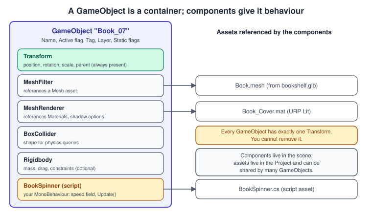
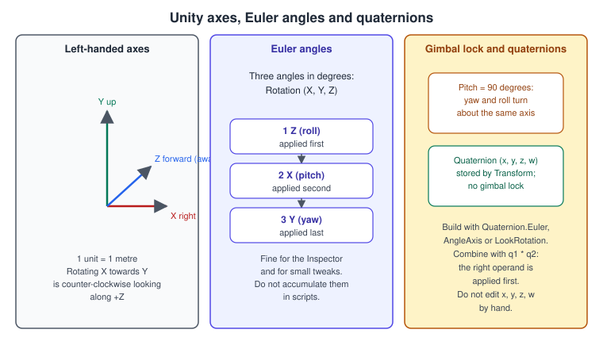
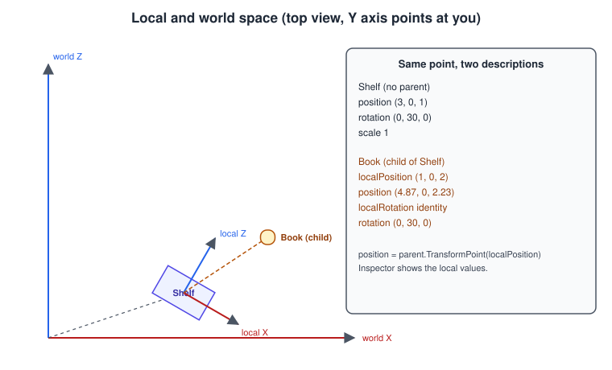
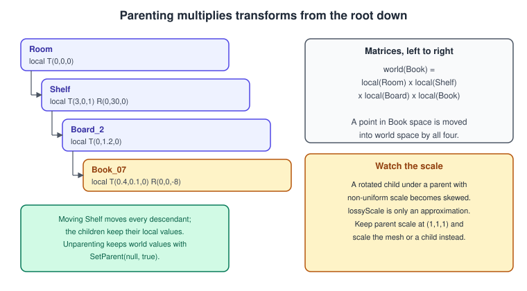
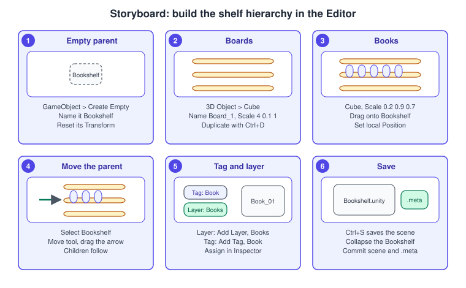

GameObjects, Components and Transforms
|
This content was generated with the assistance of AI and should be verified against the official documentation before being relied on in production. |
Everything you can select in a Unity scene is a GameObject, and a GameObject does almost nothing by itself. It is a named container with a position in space and a list of components; what it looks like, how it collides, whether it plays a sound or runs your code is decided by the components attached to it. This page is the foundation of the rest of the Unity section: it explains the container, the components, and the one component that every GameObject has, the Transform, whose parent and child relationships form the hierarchy that you see in the Editor. It uses the Bookshelf, a shelf with boards and books, as the running example.
The facts were checked in November 2026. The version documented is Unity 6.3 LTS (6000.3); changes in 6.4, 6.5 and 6.6 are called out where they matter. The examples are C# for the Editor and for Player builds on every platform, and they assume the URP 3D project created in Getting Started: Hub and Editor. The general ideas behind this page are in Entity Component System, Scene Graphs and Asset Formats, Coordinate Spaces and Transforms and Rotations and Quaternions; here they are tied to Unity’s classes and menus.
Composition: a GameObject is a container

Unity does not model a book as a Book class that inherits from Prop, which inherits from Entity. It models it by composition: an empty GameObject named Book_07 plus the components that give it behaviour. A mesh filter and a mesh renderer make it visible,
a collider and a rigidbody make it solid and let it fall, and a BookSpinner script that you wrote makes it turn. Remove a component and that ability disappears; add one and it appears. The idea is a cousin of the entity-component-system
architecture of Entity Component System; Unity’s classic GameObject model keeps data and behaviour together in components, and the data-oriented DOTS model of
DOTS: ECS, Jobs and Burst separates them.
The GameObject itself holds a small amount of state, which is shown at the top of the Inspector:
-
Name. A label; it does not need to be unique.
-
Active. Whether the GameObject, and with it all its components and its children, takes part in the scene.
-
Static flags. Which systems may precompute data for it because it never moves.
-
Tag and Layer. A tag is a word that identifies a kind of object for scripts; a layer is a number from 0 to 31 that includes or excludes groups of objects from rendering, physics queries and collisions.
Source: The GameObject class
The class family
UnityEngine.Object is the base of everything Unity can serialise or destroy. A Component always lives on one GameObject and reaches it through gameObject and its Transform through transform. A Behaviour is a component that can be switched off with its enabled checkbox;
MonoBehaviour is the base class of your scripts, and it is also a Behaviour. Renderers and colliders are components too: a Mesh Renderer, a Box Collider and the Transform each have their own class.
Source: GameObject (scripting API)
Source: Component (scripting API)
Creating GameObjects
In the Editor you create objects from the GameObject menu or by right-clicking the Hierarchy: an Empty object (only a Transform), the 3D primitives (cube, sphere, capsule, cylinder, plane and quad), lights, cameras, UI elements and so on. In code there are three ways:
using UnityEngine;
namespace Bookshelf
{
public sealed class CreationExamples : MonoBehaviour
{
[SerializeField] private GameObject bookPrefab;
private void Start()
{
// 1. An empty GameObject, with components added by type.
var root = new GameObject("Bookshelf", typeof(BoxCollider));
root.transform.SetParent(transform, false);
// 2. A built-in primitive, which already has a mesh, a renderer and a collider.
GameObject board = GameObject.CreatePrimitive(PrimitiveType.Cube);
board.name = "Board_1";
board.transform.SetParent(root.transform, false);
board.transform.localScale = new Vector3(4f, 0.1f, 1f);
// 3. A copy of an existing object or prefab asset.
if (bookPrefab != null)
{
GameObject book = Instantiate(bookPrefab, new Vector3(0f, 1f, 0f), Quaternion.identity, root.transform);
book.name = "Book_01";
}
}
}
}Source: Object.Instantiate
Instantiate copies a prefab or any existing GameObject, including its children and components, and returns the copy; the overloads take a parent and a position and rotation. It is the usual way to spawn books at runtime, and the next pages replace the per-spawn allocation with pooling (see
Project Architecture and Design Patterns). Object.Destroy removes a GameObject or a single component at the end of the frame; the object can still be used until then, and a destroyed object compares equal to null in Unity’s overloaded equality.
Source: Object.Destroy
Working with components
Adding, getting and requiring
A component is added in the Editor through the Add Component button of the Inspector or the Component menu, and it is added in code with AddComponent. Components are read back from a GameObject with the GetComponent family:
| Call | Meaning |
|---|---|
|
the first component of type |
|
the same, as a boolean test; unlike |
|
searches this GameObject and its active descendants; pass |
|
searches this GameObject and then its ancestors |
|
every match, into a new array or into a list you pass in |
Source: Component.TryGetComponent
Unity serialises references between components and assets, so most of the time you do not call GetComponent at all: you declare a [SerializeField] field and drag the target into it in the Inspector. Use GetComponent for components on the same GameObject
and cache the result once in Awake; the call walks a list and is not free, so it does not belong in Update.
using UnityEngine;
namespace Bookshelf
{
/// <summary>Tints one book's renderer to show that it is under the pointer.</summary>
[DisallowMultipleComponent]
[RequireComponent(typeof(Collider))]
public sealed class BookHighlight : MonoBehaviour
{
private static readonly int BaseColorId = Shader.PropertyToID("_BaseColor");
[SerializeField] private Renderer targetRenderer;
[SerializeField] private Color highlightColor = new Color(1f, 0.85f, 0.35f, 1f);
private MaterialPropertyBlock block;
private void Awake()
{
// Prefer the field assigned in the Inspector; fall back to a lookup.
if (targetRenderer == null && !TryGetComponent(out targetRenderer))
{
targetRenderer = GetComponentInChildren<Renderer>();
}
block = new MaterialPropertyBlock();
}
public void SetHighlighted(bool highlighted)
{
if (targetRenderer == null)
{
return;
}
targetRenderer.GetPropertyBlock(block);
block.SetColor(BaseColorId, highlighted ? highlightColor : Color.white);
targetRenderer.SetPropertyBlock(block);
}
}
}Source: RequireComponent
[RequireComponent(typeof(Collider))] makes the Editor add a Collider automatically when the script is added and refuse to remove it while the script is present; [DisallowMultipleComponent] forbids two copies on one object. Both attributes are enforced by the Editor, not at runtime, so
they protect you when you work in the Inspector but not against AddComponent in a build. _BaseColor is the colour property of the URP Lit shader; the Built-in Render Pipeline’s Standard shader used _Color, which is one of the changes in the list at the end of the page.
Source: DisallowMultipleComponent
Enabled is not active
Two switches are easy to confuse:
-
A GameObject is active or inactive (
SetActive, and the checkbox beside its name). An inactive GameObject turns off all of its components and its children: it is invisible and receives noUpdateor physics callbacks. -
A
Behaviour, a renderer or a collider has its own enabled checkbox. A disabled component stops doing its job but the GameObject and its other components keep running.
activeSelf reads the object’s own flag. activeInHierarchy tells whether the object is actually active in the scene, because an object is only active when its own flag and the flags of all its parents are set: a child that is active under an inactive parent has activeSelf true and activeInHierarchy false.
using UnityEngine;
namespace Bookshelf
{
public sealed class ActiveStateDemo : MonoBehaviour
{
[SerializeField] private GameObject shelf;
[SerializeField] private GameObject book; // a child of the shelf
[SerializeField] private Behaviour spinner; // for example a BookSpinner
private void Start()
{
shelf.SetActive(false);
Debug.Log($"book.activeSelf = {book.activeSelf}"); // True
Debug.Log($"book.activeInHierarchy = {book.activeInHierarchy}"); // False
shelf.SetActive(true);
spinner.enabled = false; // the book stays visible but stops spinning
}
}
}Source: Deactivating GameObjects
Because Awake runs when an object first becomes active, deactivating a GameObject in the scene delays its initialisation until it is activated. This matters for UI panels and for pooled books, where the first activation does the work.
Static flags
A GameObject that never moves at runtime can be marked static. The Static Editor Flags drop-down in the Inspector decides which systems may include it in their precomputations: global-illumination baking (Contribute GI), occlusion culling (Occluder Static and Occludee Static), static batching (Batching Static) and Reflection Probe baking. Navigation static flags are deprecated, and navigation data now comes from the AI Navigation package’s components. The flags only matter in the Editor: changing them at runtime has no effect. Mark the shelf and its boards static; do not mark the books, which the player moves.
Source: Static GameObjects
Tags and layers
A tag is a name from the project’s tag list, and a GameObject has exactly one. A layer is one of 32 numbered slots, and a GameObject is in exactly one. Both identify things, but they do different jobs:
| Tag | Layer | |
|---|---|---|
What it is |
a word such as |
a number 0 to 31 with a name |
Per GameObject |
one |
one |
Used for |
identifying a kind of object in scripts ( |
filtering: physics raycasts and collisions, camera culling masks, light culling masks |
Created in |
Tags and Layers manager; a name cannot be changed once it is created |
Tags and Layers manager; layers 0, 1, 2, 4 and 5 are built in (Default, TransparentFX, Ignore Raycast, Water and UI) and the rest can be named |
The built-in tags are Untagged, Respawn, Finish, EditorOnly, MainCamera, Player and GameController. Layer 31 is used internally by the Editor’s Preview window mechanics, so do not use it.
Check a tag with CompareTag and not with tag == "Book": CompareTag does not allocate a string and it logs an error if the tag does not exist, which catches typos that a string comparison would hide.
A layer mask is a 32-bit integer with one bit per layer; a LayerMask field shows as a drop-down of layers in the Inspector, and physics queries take it as a parameter.
using UnityEngine;
namespace Bookshelf
{
/// <summary>A trigger volume that accepts returned books and ignores everything else.</summary>
[RequireComponent(typeof(Collider))]
public sealed class ReturnSlot : MonoBehaviour
{
[SerializeField] private LayerMask acceptedLayers;
[SerializeField] private string acceptedTag = "Book";
private void Reset()
{
// Called in the Editor when the component is added: make the collider a trigger.
GetComponent<Collider>().isTrigger = true;
}
private void OnTriggerEnter(Collider other)
{
// Layer filter: shift 1 by the layer number and test the bit.
if ((acceptedLayers.value & (1 << other.gameObject.layer)) == 0)
{
return;
}
// Tag filter: the tag "Book" must exist in the Tags and Layers manager.
if (!other.CompareTag(acceptedTag))
{
return;
}
Debug.Log($"{other.name} returned to the shelf");
}
}
}Source: GameObject.CompareTag
Source: Layers and layerMasks
The Transform
The Transform is the component that every GameObject has and cannot lose. It stores the position, rotation and scale of the object and its place in the hierarchy (parent and children). The Inspector shows the three values and also the Enable Constrained Proportions option, which locks the ratio of the scale axes. The values you see in the Inspector are measured relative to the object’s parent; if there is no parent they are world values.
Source: Transforms
Axes and units

Unity uses a left-handed coordinate system: the positive X axis points to the right, Y up and Z forward, and rotating from X towards Y is counter-clockwise when you look along the positive Z axis. This is the opposite of the right-handed convention of glTF, OpenGL’s conventional view space and Blender, which is why an importer has to convert handedness (the glTFast package of the previous page does this on import) and why a model can arrive mirrored if it is converted twice or not at all. One unit is one metre by default for the physics engine, so a book is about 0.2 units wide and a shelf is four units long. Model at real scale: a house-sized object falls in apparent slow motion because the simulation is correct for its size.
The three axes are drawn red, green and blue in the Scene view for X, Y and Z, in that order. See Coordinate Spaces and Transforms for the general chain from model space to the screen and how handedness changes the matrices.
Local space and world space

Each GameObject has its own coordinate frame, whose origin is the object’s position and whose axes follow its rotation and scale. The local values (localPosition, localRotation, localScale) describe the object in its parent’s frame; the world values (position,
rotation, lossyScale) describe it in the scene’s frame. Without a parent the two coincide. With a parent, the world position of a child is the parent’s transformation applied to the child’s local position:
\[ p_{ world } = T_{ parent } \, ( \, R_{ parent } \, S_{ parent } \, p_{ local } \, ) \]
where \( T \), \( R \) and \( S \) are the translation, rotation and scale of the parent. In the figure the shelf is at \( ( 3, 0, 1 ) \) with a yaw of 30 degrees, and the book has the local position \( ( 1, 0, 2 ) \): the world X component is \( 3 + 1 \cos 30^{\circ} + 2 \sin 30^{\circ} \approx 4.87 \) and the world Z component is \( 1 - 1 \sin 30^{\circ} + 2 \cos 30^{\circ} \approx 2.23 \). The next script builds exactly that arrangement and logs the numbers, together with the three conversion methods:
using UnityEngine;
namespace Bookshelf
{
public sealed class TransformTour : MonoBehaviour
{
private void Start()
{
Transform shelf = new GameObject("Shelf").transform;
shelf.SetPositionAndRotation(new Vector3(3f, 0f, 1f), Quaternion.Euler(0f, 30f, 0f));
Transform book = new GameObject("Book").transform;
book.SetParent(shelf, false); // false: keep the local values, not the world ones
book.localPosition = new Vector3(1f, 0f, 2f);
Debug.Log($"local = {book.localPosition:F2}, world = {book.position:F2}"); // world (4.87, 0.00, 2.23)
// The conversions the Transform offers:
Vector3 world = shelf.TransformPoint(book.localPosition); // point: scale, rotate, translate
Vector3 local = shelf.InverseTransformPoint(world); // and back
Vector3 shelfRightInWorld = shelf.TransformDirection(Vector3.right); // direction: rotation only
Vector3 stepInWorld = shelf.TransformVector(new Vector3(0f, 0f, 1f)); // vector: rotation and scale
Debug.Log($"{world:F2} {local:F2} {shelfRightInWorld:F2} {stepInWorld:F2}");
// Unparenting: true keeps the world pose, false keeps the local numbers.
book.SetParent(null, true);
Debug.Log($"after unparenting: local = {book.localPosition:F2}"); // equals the world position now
}
}
}Source: Transform.TransformPoint
Source: Transform.SetParent
The worldPositionStays argument of SetParent is the most commonly misused parameter in the scene API. With true (the default of the overload that has no flag) Unity changes the local values so that the object does not move in the world. With false it keeps the local values, so the object
jumps to wherever those numbers put it under the new parent. Use false when you spawn an object under a parent at a local position, as ShelfBuilder below does, and true when you reparent an object that is already in the right place.
The hierarchy is a chain of matrices

Each Transform stores its local translation, rotation and scale. The world matrix of an object is the product of the local matrices along the path from the root:
\[ M_{ world } = M_{ root } \, M_{ child_1 } \cdots M_{ child_n } \]
This is what makes grouping useful: moving, rotating or scaling Bookshelf changes one local value and every descendant follows. It is also the scene graph of Scene Graphs and Asset Formats,
and every world value that Unity reports is derived from it. A parent has any number of children; a child has exactly one parent; the one without a parent is a root. Roots are listed in the Hierarchy, and transform.root returns the root of a branch.
The hierarchy is also the structure that you walk with the Transform API:
using System.Text;
using UnityEngine;
namespace Bookshelf
{
/// <summary>Builds the shelf from code and prints its hierarchy.</summary>
public sealed class ShelfBuilder : MonoBehaviour
{
[SerializeField] private Material boardMaterial;
[SerializeField] private Material bookMaterial;
[SerializeField, Min(1)] private int boards = 4;
[SerializeField, Min(1)] private int booksPerBoard = 6;
[SerializeField, Min(0.5f)] private float width = 4f;
[SerializeField, Min(0.2f)] private float boardSpacing = 0.6f;
private void Start()
{
Build();
Debug.Log(Describe(transform, 0));
}
public void Build()
{
// Remove what a previous call created. Iterate backwards because Destroy
// is deferred, and the child count only changes at the end of the frame.
for (int i = transform.childCount - 1; i >= 0; i--)
{
Destroy(transform.GetChild(i).gameObject);
}
int booksLayer = LayerMask.NameToLayer("Books"); // -1 when no layer has that name
for (int b = 0; b < boards; b++)
{
float y = b * boardSpacing;
GameObject board = GameObject.CreatePrimitive(PrimitiveType.Cube);
board.name = $"Board_{b + 1}";
board.transform.SetParent(transform, false);
board.transform.localPosition = new Vector3(0f, y, 0f);
board.transform.localScale = new Vector3(width, 0.05f, 0.8f);
Apply(board, boardMaterial);
for (int k = 0; k < booksPerBoard; k++)
{
GameObject book = GameObject.CreatePrimitive(PrimitiveType.Cube);
book.name = $"Book_{b + 1}{k + 1:00}";
book.transform.SetParent(board.transform, false);
Apply(book, bookMaterial);
// The books are children of the board, so their local scale and position are
// relative to a board that is 4 wide and only 0.05 thick. Counter its scale.
float slot = width / (booksPerBoard + 1);
float xWorld = -width * 0.5f + slot * (k + 1);
book.transform.localScale = new Vector3(0.2f / width, 0.4f / 0.05f, 0.6f / 0.8f);
book.transform.localPosition = new Vector3(xWorld / width, 0.5f + 0.2f / 0.05f, 0f);
if (booksLayer >= 0)
{
book.layer = booksLayer;
}
}
}
}
private static void Apply(GameObject go, Material material)
{
if (material != null && go.TryGetComponent(out Renderer r))
{
r.sharedMaterial = material;
}
}
private static string Describe(Transform t, int depth)
{
var sb = new StringBuilder();
sb.Append(' ', depth * 2).Append(t.name).Append(" local ").Append(t.localPosition.ToString("F2")).AppendLine();
foreach (Transform child in t) // a Transform enumerates its direct children
{
sb.Append(Describe(child, depth + 1));
}
return sb.ToString();
}
}
}Source: Transform.GetChild
The example is also a warning: the scale of a parent multiplies the local positions and scales of its children, so a book under a board that is 4 wide, 0.05 thick and 0.8 deep has to be given a "counter-scale" to look like a normal book. The cleaner design is not to put the books under the scaled board but under a sibling or under the unscaled Bookshelf root, with the board’s scale used only
on the board’s own mesh. This is the single most important design rule of the hierarchy: keep the scale of containers at 1 and put the size in the leaves.
Scale and shear
A non-uniform scale on a parent combined with a rotated child produces a shear: a skewed shape that a position, rotation and scale cannot describe any more. lossyScale is therefore named lossy: it returns the world scale as a vector, and it is only exact when no shear is present. The Transform has no
setter for world scale because of this. With uniform scales on parents, which is what you should have, none of it matters. The scale of a mesh is also affected by the Mesh Scale Factor in the model’s import settings, so a model that is two units tall in the modelling program may be some other size in Unity.
Rotations
Euler angles
The Inspector shows rotation as three Euler angles in degrees, and eulerAngles, localEulerAngles and Quaternion.Euler use the same convention. Unity applies them as extrinsic rotations in the order Z (roll), then X (pitch), then Y (yaw), about fixed world axes. Angles are
easy to read and to type, and they are fine for setting a pose in the Inspector or for an orientation you build once with Quaternion.Euler. They are poor for accumulating change.
Quaternions
Internally the Transform stores the rotation as a unit quaternion: four numbers (x, y, z, w) that you do not edit by hand. A quaternion has no gimbal lock, composes with a multiplication and interpolates smoothly. Unity displays a quaternion as Euler angles because a quaternion cannot represent a turn of more than 360 degrees about one axis, so the Inspector value you see is one of several equivalent angle triples.
| Call | Use |
|---|---|
|
build a rotation from degrees |
|
a turn of |
|
the rotation that faces |
|
step from |
|
spherical interpolation, the shortest arc, with a constant angular speed over |
|
combine two rotations; the right operand is applied first |
|
rotate a vector by a quaternion (the quaternion goes on the left) |
Source: Quaternion (scripting API)
Gimbal lock and the accumulation bug
When two Euler axes line up (a pitch of 90 degrees makes yaw and roll rotate about the same axis) one degree of freedom disappears: that is gimbal lock. In practice the failure you see more often is the accumulation bug: a script reads eulerAngles, adds to one component and writes it
back, and after a few frames the object rotates unexpectedly, because the Euler triple read from a quaternion is not the triple you wrote. The fix is to keep your own yaw and pitch as floats and build the quaternion from them each frame:
using UnityEngine;
namespace Bookshelf
{
/// <summary>A free-look rig: yaw and pitch are stored as floats, never read back from the rotation.</summary>
public sealed class FreeLook : MonoBehaviour
{
[SerializeField, Min(0f)] private float degreesPerUnit = 0.15f;
[SerializeField] private Vector2 pitchLimits = new Vector2(-80f, 80f);
private float yaw;
private float pitch;
private void Awake()
{
Vector3 e = transform.localEulerAngles;
yaw = e.y;
pitch = e.x > 180f ? e.x - 360f : e.x; // convert 0..360 to -180..180
}
/// <summary>Called by an input handler with a pointer or stick delta.</summary>
public void AddLook(Vector2 delta)
{
yaw += delta.x * degreesPerUnit;
pitch = Mathf.Clamp(pitch - delta.y * degreesPerUnit, pitchLimits.x, pitchLimits.y);
transform.localRotation = Quaternion.Euler(pitch, yaw, 0f);
}
}
}Source: Quaternion.Euler
Smoothly turning towards a target is a different job, and the right tool is RotateTowards (a constant speed in degrees per second) or Slerp with a small time step. A book that turns to face the camera on the horizontal plane:
using UnityEngine;
namespace Bookshelf
{
/// <summary>Turns a book towards a target about the world up axis at a limited speed.</summary>
public sealed class BookFacesTarget : MonoBehaviour
{
[SerializeField] private Transform target;
[SerializeField, Min(1f)] private float degreesPerSecond = 180f;
private void Update()
{
if (target == null)
{
return;
}
Vector3 toTarget = target.position - transform.position;
toTarget.y = 0f; // stay upright
if (toTarget.sqrMagnitude < 1e-6f)
{
return; // no direction to face
}
Quaternion goal = Quaternion.LookRotation(toTarget, Vector3.up);
transform.rotation = Quaternion.RotateTowards(transform.rotation, goal, degreesPerSecond * Time.deltaTime);
}
}
}Source: Quaternion.RotateTowards
Moving and rotating with the Transform methods
Translate and Rotate default to the object’s own space (Space.Self): transform.Translate(0, 0, 1) moves one unit along the object’s forward axis, not the world Z axis. Pass Space.World to move along the world axes. RotateAround turns about a point, LookAt aims the forward axis at a point,
and SetPositionAndRotation writes both in one call, which is cheaper than two property writes because the Transform recomputes its state once.
Source: Transform.Translate
Source: Transform.LookAt
Procedure: build the shelf hierarchy in the Editor

-
In the Hierarchy, choose GameObject > Create Empty (or press
Ctrl+Shift+N, macOSCmd+Shift+N). Name itBookshelfand reset its Transform so it sits at the origin with scale 1. -
Right-click
Bookshelf, choose 3D Object > Cube to create a child, and name itBoard_1. In the Inspector set its Scale to4, 0.1, 1. Select it and duplicate it withCtrl+D(macOSCmd+D) three times, setting the local Y positions to 0.6, 1.2 and 1.8. -
Create a cube for a book, set its Scale to
0.2, 0.9, 0.7, drag it ontoBookshelfin the Hierarchy (not onto a board, whose scale would distort it) and set its local Position so it rests on a board. Duplicate it for the other books. -
Select
Bookshelf, choose the Move tool (W), and drag an arrow of the gizmo. All the boards and books follow, and their local values in the Inspector do not change. -
Create a layer
Books(the Layer drop-down, Add Layer) and a tagBook(the Tag drop-down, Add Tag), and assign both to the books. Mark the boards static through the Static drop-down. -
Save the scene with
Ctrl+S(macOSCmd+S). CollapseBookshelfin the Hierarchy to keep the list readable.
Source: Primitive objects
The shared model bookshelf.glb gives you a similar hierarchy ready-made: after the import described in Getting Started: Hub and Editor its nodes appear as GameObjects, with the Shelf node, whose single mesh holds the six boards, and the nine books, which share one mesh, as children of the Bookshelf root. The boards are not separate objects in the file.
Prefabs, the next level of reuse, are in Prefabs and Scenes.
The unmanaged TransformHandle
The Transform is a managed class, which makes it unusable in Burst-compiled jobs. Unity 6.3 documents a TransformHandle, an unmanaged struct that offers an alternative API for transform operations and is compatible with the Burst compiler. For classic MonoBehaviour code the Transform remains the right tool;
TransformHandle is for performance-critical code that must run in jobs, together with the DOTS tools of DOTS: ECS, Jobs and Burst. The data-oriented side of the engine, where transforms are plain data, is the subject of that page.
Common mistakes
-
Putting the size in a container. A non-uniform scale on a parent distorts rotated children and complicates physics. Keep containers at scale 1.
-
Calling
GetComponentorFindinUpdate. Cache the result inAwake, or serialise the reference. -
Using
Findby name andtag == "Book". Names and tags change; references andCompareTagdo not. -
Reading a world value right after reparenting and expecting the old local value.
SetParent(parent, true)changes the local numbers. -
Rotating by writing
eulerAngles. Keep your own angles, or useRotate,RotateAroundand quaternion products. -
Writing
transform.position.y = 1f.positionreturns a copy of a struct, so this is a compile error; assign a wholeVector3or useSetPositionAndRotation. -
Multiplying quaternions in the wrong order. The right operand is applied first, and the product of two rotations is not commutative.
-
Confusing
enabledwithSetActive. Disabling a component does not hide children, and deactivating an object stops all its callbacks. -
Expecting
Destroyto remove the object at once. It happens at the end of the frame; use the object’sactiveSelfor detach it first when you need it gone immediately. -
Moving a
Rigidbodyobject through the Transform. Physics objects are moved with forces or the Rigidbody API, so the physics engine knows about it (3D Physics).
Performance notes
-
A Transform write marks its descendants as changed. Deep hierarchies with many moving objects cost more than a flat one; prefer a shallow hierarchy and do not parent objects only for tidiness if they move individually.
-
Every
GetComponentcall is a search; cache once per object.TryGetComponentavoids a managed allocation of an error message in the Editor when the component is missing. -
CompareTagdoes not allocate; readingtagornameallocates a string every call. -
The
MaterialPropertyBlockofBookHighlightmakes a renderer incompatible with the SRP Batcher, the batching path of URP. For many books, give each highlighted state its own material or use a shader property per instance (see URP in Depth). -
Static GameObjects are cheaper: occlusion, batching and lightmaps can be precomputed. Do not mark moving objects static.
-
SetPositionAndRotationandTransform.SetLocalPositionAndRotationcost less than two property writes. -
Instantiating hundreds of books per second allocates; use pooling (
UnityEngine.Pool) as shown in Project Architecture and Design Patterns. Measure first with Profiling and Optimization and see the general advice in Performance and Profiling.
What changed recently
| When | What |
|---|---|
Unity 2022 and earlier |
|
Unity 6.0 |
|
Unity 6.3 LTS |
the unmanaged |
Unity 6.4 and 6.5 |
the 32-bit |
Built-in Render Pipeline to URP |
the Standard shader’s |
Where the books are outdated
UIA chapters 1, 2 and 8 and GDP chapter 3 introduce GameObjects, components and transforms. The ideas are current; the details moved:
| Book | Today |
|---|---|
UIA ch. 2: moving the player with |
The legacy Input Manager is discouraged; new Unity 6 projects have the Input System installed by default (Input System). |
UIA ch. 2, 8: |
Cache with |
UIA ch. 8: |
Removed; use |
UIA ch. 2, 8: Euler-angle rotation by editing |
Still compiles, but accumulating Euler angles is the cause of the gimbal and drift problems above; use quaternions or stored angles |
GDP ch. 3: components as the unit of reuse, with |
Still valid; see also ScriptableObjects and Data-Driven Design for the data side |
UIA ch. 2, 8 and GDP ch. 3: shader colour property |
URP Lit uses |
See also
-
Getting Started: Hub and Editor: the Hierarchy, the Inspector and the project folders.
-
C# Scripting and the MonoBehaviour Lifecycle: when
Awake,StartandUpdaterun, and in what order. -
Prefabs and Scenes: reusing GameObjects.
-
3D Physics: Rigidbody, colliders and layers in collisions.
-
Cameras and Cinemachine: the Camera component and its Transform.
-
DOTS: ECS, Jobs and Burst: the data-oriented alternative to components on GameObjects.
-
Entity Component System: the general architecture.
-
Coordinate Spaces and Transforms: spaces and matrices in general.
-
Rotations and Quaternions: the mathematics behind the rotation section.
-
Vectors, Matrices and Homogeneous Coordinates: the linear algebra of the Transform.
-
Scene Graphs and Asset Formats: hierarchies and glTF.
-
C# Classes and Objects: the language side of components.